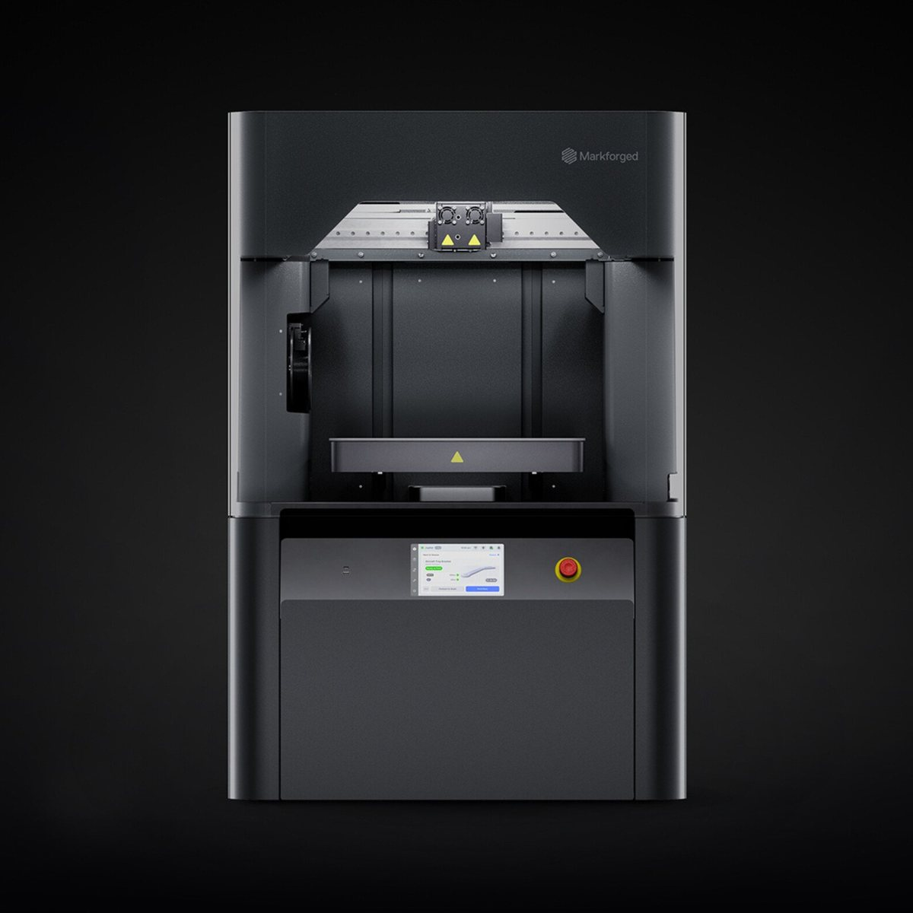
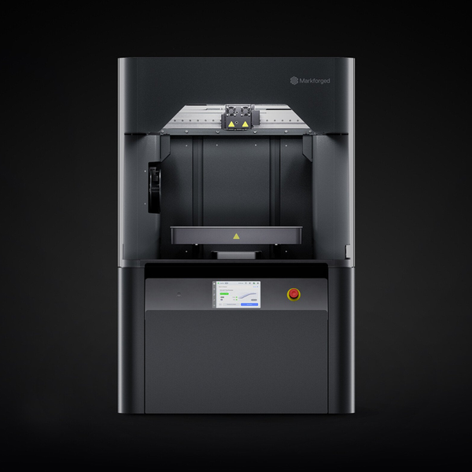
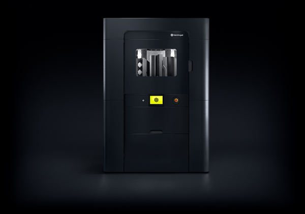
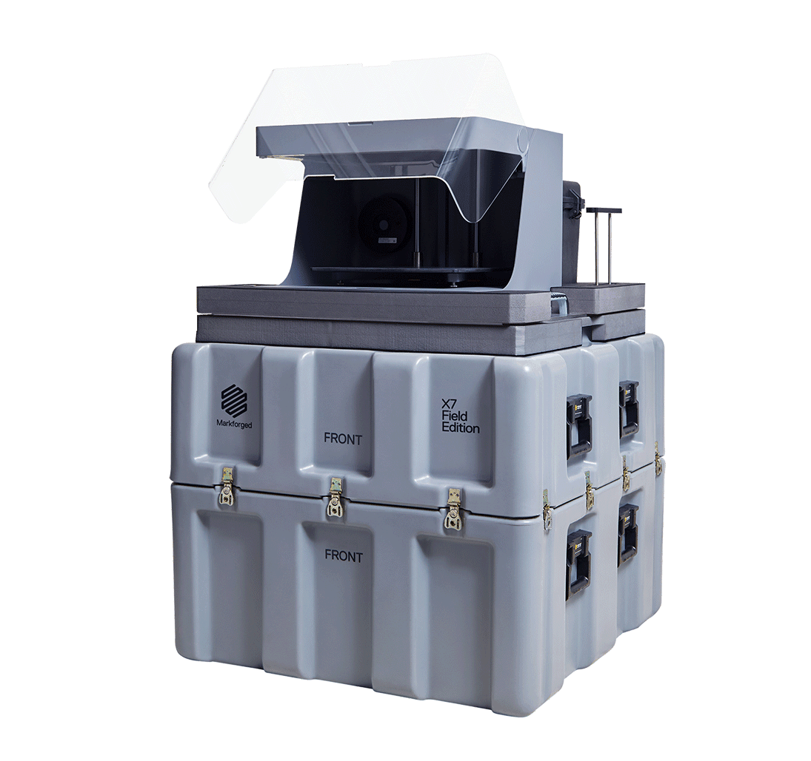

Markforged 台灣官方
從連續碳纖維複合材料到不鏽鋼與工具鋼零件，一台 FX10 兩種製程都做得到。Markforged 為台灣製造業提供工業級 3D 列印解決方案。
為何選擇 Markforged
連續碳纖維材料抗拉強度達 800 MPa（原廠規格），可取代部分機加工鋁件，適用汽車、航太、醫療等高要求產業。
夾治具與零件在廠內列印，省去外包加工的報價、排程與往返運送，設計改版後直接重印。
FX10 換上 Metal Kit 即可列印 17-4PH、316L 不鏽鋼與 H13 工具鋼，搭配 Wash-1 與 Sinter-2 在廠內完成金屬零件。
隨時隨地監控列印進度、管理零件庫，全廠設備統一管理。
觀點短片
產品系列



應用解決方案
輕量化複合結構件、夾治具、維修備件與工裝，在需求點製造，縮短補給等待。
快速列印治具、夾具、試製零件，縮短研發週期，加速新車型從設計到量產的時程。
生產線工裝、備用零件廠內自製，降低停機風險，減少外包採購成本與等待時間。
研究、訓練、輔具與手術輔助工具的客製零件與功能原型。
影片
1:26
德國客戶親口說的實測：改用 Markforged 連續纖維列印後，參考治具成本最高比 CNC 銑削低 75%，今天出圖、隔天拿到零件。
全球首台工業級金屬複合材料 3D 列印機，現在就在台灣。一對一 VIP 專屬展示，由 Markforged 台灣原廠工程師針對您的需求客製化演示。